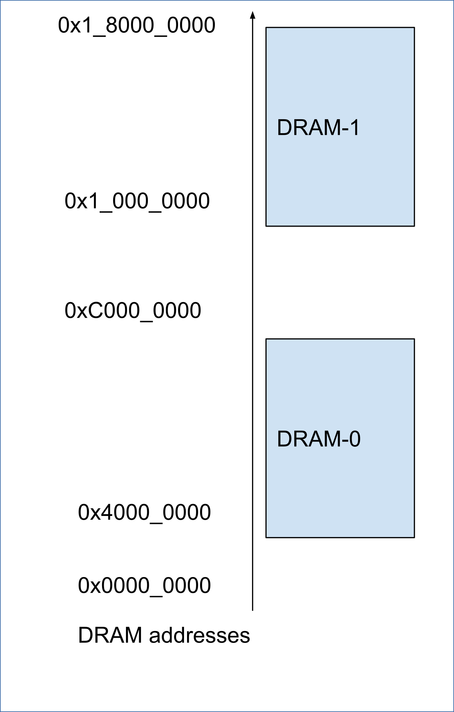
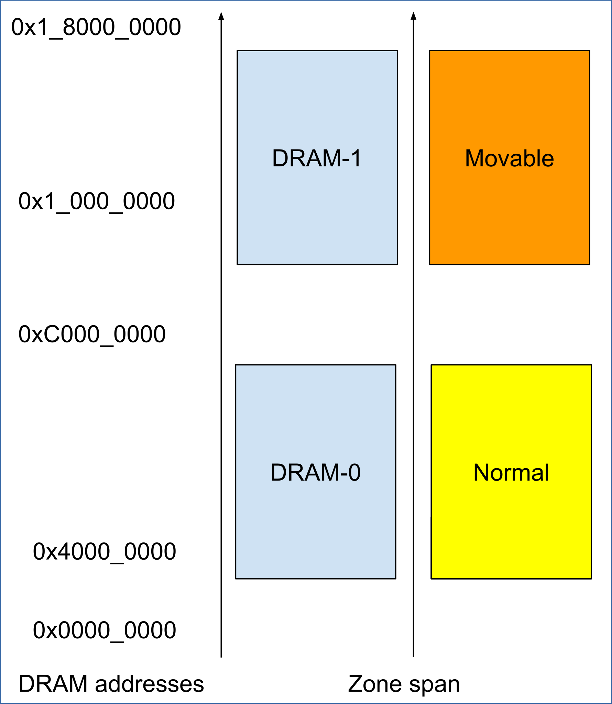
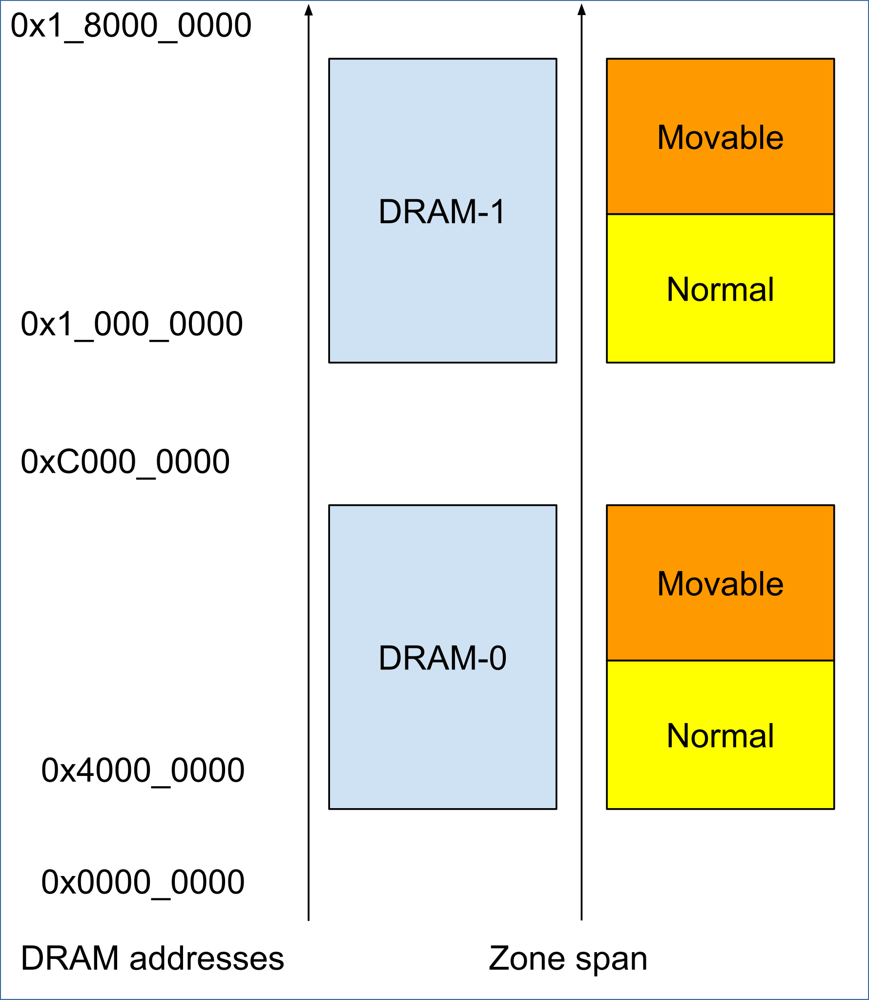

Designated movable (memory) blocks
The motivation for these patches stems from the need to support large, contiguous allocations (2MB or more) for audio and video device drivers on hardware that lacks an IOMMU and may have a small amount (1-2GB) of memory. These devices are commonly found as set-top boxes running a variety of Linux-based software environments from RDK and Android TV to entirely custom software stacks.
One of the most prominent SoC vendors in the set-top-box product space is Broadcom, whose systems have been designed with a custom DRAM controller implementing a complex arbitration scheme between DRAM clients that is intended to provide strong quality-of-service guarantees with no video pixels lost. In such a system, the CPU, GPU, video decoder, and audio decoder are all clients of the DRAM controller, each with its own priority and servicing needs. The video decoder and display clients need realtime access to DRAM, while the CPU and GPU can be given round-robin access to the remaining bandwidth.

In order to continue to satisfy the need for higher video resolution, DRAM bandwidth must also increase while keeping the overall system cost down. One way to offer more DRAM bandwidth is to add DRAM controllers, each managing a set of the DRAM chips in the system, as shown to the right. This approach naturally fits into the DRAM controller's arbitration mechanism; it would allow for the CPU to be granted bandwidth with equal priority across the multiple DRAM controllers, while allowing each video decoder to be attached to its own controller. The decoder handling the main picture could be attached to one controller, while the decoder handling picture-in-picture would be attached to the other.This scheme will only work, though, if each decoder is accessing memory attached to the correct controller. The first challenge, thus, consists of having the kernel ensure that the physical memory pages that are allocated to these video decoders come from separate memory controllers so that clients can be split across the available DRAM space. The second challenge is to hand large (several hundreds of MBs) chunks of physically contiguous memory to these video decoders.
One possibility would be to use device-private CMA areas, declared in the devicetree, to solve this problem. Alternatively, as was done for many years in vendor-provided kernels, a fixed carve-out region, with memory held as "reserved" from the kernel, could solve the problem. The difficulty with these approaches, however, is the lack of memory-sharing opportunities between the kernel and the constituents it serves, which are mostly user-space applications.
With a fixed carve-out and the memory held in reserve, we are guaranteed that the memory needed by the video decoders will be available, but at the cost of configuring the system with the worst-case scenario in mind. While this approach is functional, given large amounts of DRAM, it does not allow the kernel to dynamically re-utilize that memory, wasting memory that could be used when video is not being displayed on the screen.
CMA does provide for some sharing opportunities, but CMA prioritizes the kernel driver tied to the CMA region in order to ensure that the memory will be available when the driver needs it. While various attempts have been made to improve the way CMA holds onto memory and how its heuristics work, many years of field testing eventually proved these approaches inadequate given the large amounts of memory needed (sometimes over half of the total DRAM size). This resulted in performance problems stemming from the kernel continuously moving memory around to service both user-space allocations and kernel-driver needs.
An ideal solution would provide a truly uniform memory architecture for all DRAM clients and lift the need for large contiguous memory allocations, utilizing IOMMUs to assemble individual pages into a contiguous virtual address space for the devices. This is typically how other SoC vendors have designed their systems; that is, however, not the case for the hardware under discussion here. Now that the Android Generic Kernel Image (GKI) is being mandated for Android TV, the need for a generic solution has become more pressing.
Designated movable blocks
The designated movable block patch set is an attempt at solving these problems while modifying as little code as possible, in order to maximize the chances of being included in the Android kernel built for GKI. The patch set builds upon a number of existing kernel features that are currently only accessible in systems making use of NUMA and ACPI System Resource Affinity Tables describing hot-pluggable memory, which are not present on the set-top-box devices.
A designated movable block is a range of memory, of arbitrary size, that has been designated by the system administrator as containing only movable memory. These blocks can be defined using the movablecore command-line parameter; other approaches such as devicetree reserved regions may be possible as well. By carefully placing designated movable blocks in the range covered by each DRAM controller, a system designer should be able to create memory regions that will be available to device drivers when needed, but which are also usable for other purposes the rest of the time.
The kernel has long had the concept of zones, which are used to partition memory, usually to be able to handle addressing limitations. For instance ZONE_DMA and ZONE_DMA32 exist to provide memory for peripherals that can only perform DMA to a portion of the physical address space. One of the special zones added to support hot-pluggable memory was ZONE_MOVABLE, which is intended to contain only (or mostly) movable allocations. The kernel will typically place user-space allocations within ZONE_MOVABLE, since they can be moved without user space noticing. The kernel will also try hard not to put pinned or unmovable memory there, so the zone really contains mostly movable memory most of the time.
The kernel creates zones in a monotonically increasing fashion, so the zones defined in the zone_type enum will be created (when applicable) in ascending address order. Thus, for example, ZONE_DMA will be placed lower than ZONE_DMA32 which, in turn, sits below ZONE_NORMAL. ZONE_MOVABLE is normally the highest of the general memory zones. In set-top-box systems with multiple memory controllers, letting the kernel populate zones in this order will lead to an imbalance of memory zones across the memory controllers. If, for example, any ZONE_MOVABLE memory is located on DRAM-0, then all of DRAM-1 must be ZONE_MOVABLE and, conversely, if any ZONE_NORMAL memory is located on DRAM-1, then no ZONE_MOVABLE memory can be located on DRAM-0. This is shown below:

This results in customers not being happy that they cannot utilize the full DRAM bandwidth available for their applications. In order to achieve a precise and satisfactory placement of such zones, the movablecore command line parameter was enhanced to support the <amount>@<address> notation, thus allowing the desired interleaving of zones to be created:

Berger indicated that using the page_alloc.shuffle=1 command-line argument to spread the pages across the available DRAM space, ensuring that zones are defined more evenly between memory controllers as shown above, resulted in a 20% speed increase for a simple synthetic benchmark.
A second focus of the patch set is the fixed carve-outs required to meet the worst-case memory requirements of multimedia device drivers. By default, reserved memory is unavailable for other uses. However, if the reusable devicetree property is defined for the reserved memory, the operating system can use that memory with the limitation that the device driver owning the region must be able to reclaim it. Unfortunately, no mechanism currently exists in Linux, other than CMA, to provide a general implementation of reusable reserved memory so its benefits have not been realized.
Creating a designated movable block for such reusable, reserved memory would allow the kernel to move any data contained in the region when the pages are reclaimed by a device driver. The driver for which the memory was reserved would be able to claim it when needed, and the kernel would move other users as needed to satisfy the allocation; when the driver no longer needed the memory, it could be returned for other uses. The memory footprint of multimedia drivers tends to only change during transitions in modes of operation where the increased latency of migrating page data can be tolerated.
For now, though, the implementation of this functionality has been dropped to focus on the movablecore changes, which are an important first step.
Discussion and future
David Hildenbrand saw the patch set as being intrusive:
As raised, I'd appreciate if less intrusive alternatives could be evaluated (e.g., fake NUMA nodes and being able to just use mbind(), moving such memory to ZONE_MOVABLE after boot via something like daxctl).I'm not convinced that these intrusive changes are worth it at this point. Further, some of the assumptions (ZONE_MOVABLE == user space) are not really future proof as I raised.
He suggested that systems with multiple memory controllers should just be treated as if they were NUMA systems, which would allow separate NUMA nodes to represent each memory controller. While this idea is appealing, the systems described are not properly NUMA; each of the CPU cores is treated uniformly in terms of memory accesses. It is only a subset of peripherals within the system that are required to be split between memory controllers for better DRAM efficiency.
Perhaps more importantly, using NUMA would not work with Android, which does not configure the GKI for NUMA support. The GKI maintainers would either need to enable CONFIG_NUMA for all devices, which would be a waste of memory and resources for most other SoC vendors, or it would become necessary to ship a non-NUMA GKI kernel image alongside a NUMA GKI kernel image, thus partially defeating the purpose of GKI.
There were some clarifications provided by Hildenbrand as to what goes into ZONE_MOVABLE:
Let me clarify what ZONE_MOVABLE can and cannot do:
- We cannot assume that specific user space allocations are served from it, neither can we really modify behavior.
- We cannot assume that user space allocations won't be migrated off that zone to another zone.
- We cannot assume that no other (kernel) allocations will end up on it.
- We cannot make specific processes preferably consume memory from it.
Designing a feature that relies on any of these assumptions would be wrong. However, the intent is to not force or guarantee that applications will obtain their memory from ZONE_MOVABLE but, rather, to exploit the nice properties of that zone as containing movable memory.
The patch set is intended to allow people who are currently unhappy with the MIGRATE_CMA migration type and associated heuristics to define their device-private CMA regions (shared-dma-pool in the devicetree) as falling within a designated movable block and, thus, utilize the MIGRATE_MOVABLE heuristics instead. No one has volunteered to try that yet however.
Mel Gorman seemed more interested in the proposed idea and the extension of the movablecore kernel command-line parameter:
I don't see this approach being inherently bad as such, particularly in the appliance space where it is known in advance what exactly is running and what the requirements are. It's not automagical but it's not worse than specifying something like movablecore=100M@2G,100M@3G,1G@1024G. In either case, knowledge of the address ranges needing special treatment is required with the difference being that access to the special memory can be restricted by policies in the general case.
He was also sympathetic to the requirement to fit within the Android common kernel built in a GKI configuration:
Nodes can also interleave but it would have required CONFIG_NUMA so pointless for GKI and the current discussion other than with a time machine, GKI might have enabled CONFIG_NUMA :/
He was helpful in asking relevant questions and seeking performance numbers, which were provided during the discussion on the third iteration of the patch set.
So far, the fourth
version of the patch set has not been commented on by either
maintainer, however efforts are still underway to seek inclusion of this
work.
| Index entries for this article | |
|---|---|
| Kernel | Memory management/Large allocations |
| GuestArticles | Fainelli, Florian |